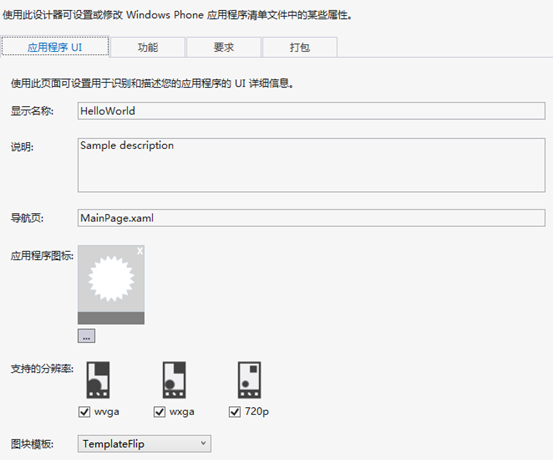
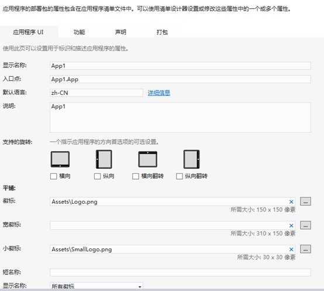
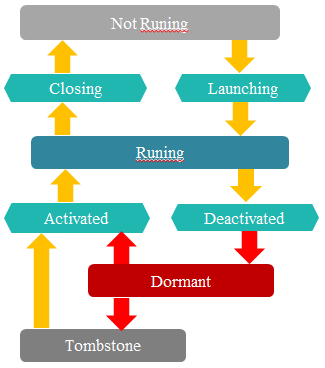
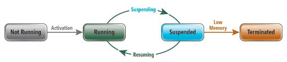
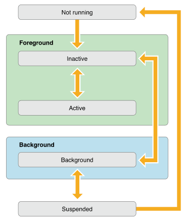
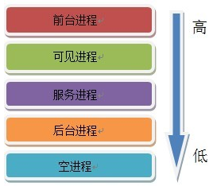

一、应用程序结构
Windows phone 8应用程序目录包括Properties文件夹、References文件夹、Assets文件夹、Resources文件夹、App.xaml、LocalizedStrings.cs、MainPage.xaml。 Properties文件夹中包含关于设置工程属性的文件，其中比较重要的是WMAppManifest.xml；References文件夹中包含工程引用的类库；Assets文件夹用于存放工程显示所必须的文件，其中ApplicationIcon.png是应用程序在程序列表中显示的图标，Tiles文件夹中存放应用程序磁贴显示所需的图片文件，在发布应用或将应用程序提交到商店之前，你可以把这些文件替换成自定义的图；Resources文件夹用于存放工程资源文件。
说明：默认文件列表所包含的文件与创建工程时所选的模版有关，根据所选模版的不同，默认文件列表也会有所变化
与Windows phone 8类似，windows 8应用程序目录也包含一些文件，比较重要的有App.xaml文件及其代码隐藏文件App.xaml.cs文件、StandardStyles.xaml文件、Package.appxmanifest文件。
其他平台，如Android和IOS应用程序也包含一些目录文件，如Android的src、gen、res目录以及AndroidManifest.xml文件，IOS的AppName.app、Documents、Library/Preferences、Library/Caches、tmp目录，以下将对其中部分重要文件进行详细介绍。
应用程序清单文件
每个 Windows Phone 应用程序都有一个包含应用程序的详细信息及该应用程序所使用功能的名为WMAppManifest.xml的清单文件，当您将应用程序提交到 Windows Phone 商城时，清单文件中的信息将用于认证过程，以在 Windows Phone 商城 中正确筛选您的应用程序，并在物理设备上部署和运行这些应用程序
WMAppManifest.xml文件有可视化和XML代码两种查看方式，双击WMAppManifest.xml文件即可进入可视化界面，如下图所示，通过该视图可以方便的修改应用程序关于UI显示、所支持的功能、对硬件设备的要求以及打包的相关信息。

图1-3
右击WMAppManifest.xml文件，打开方式选择为XML(文本)编辑器即可看到该文件的xml形式，以下为xml代码示例：
WMAppManifest.xml文件包含DEPLOYMENT 元素、APP 元素、ICONPATH 元素、CAPABILITIES 元素、TASKS 元素、TOKENS 元素等，更多关于这些元素含义和功能的信息请参见Windows Phone 的应用清单文件
对于windows 8应用，应用程序清单文件为Package.appxmanifest，用于向windows运行时提供该应用程序的相关信息，通过该文件可以设置应用程序名称、导航起始页、支持的功能等。Package.appxmanifest是XML文件，但vs提供了一种可视化的界面使得配置应用程序更加直观和方便。界面如下图所示。关于Package.appxmanifest更多信息请参见使用清单设计器（Windows 应用商店应用程序）。

其他平台也包含功能类似的文件，如Android应用程序中的AndroidManifest.xml 功能清单文件列出了应用程序所提供的功能，在这个文件中，你可以指定应用程序使用到的服务。Ios应用程序包中的.plist文件包含了项目自身的特性，比如说项目名称，默认加载的nib file，版本等。
资源文件
AppResources.resx和LocalizedStrings.cs为windows phone8应用程序提供了应用程序本地化的框架，在AppResources.resx中定义本地化字符串键值对，然后在程序要使用本地化字符串时通过绑定到AppResources.resx的键值，指明要绑定的本地化字符串。类似地，Windows 8中，StandardStyles.xaml文件定义了一些style和templatest资源，通过使用这些资源可以很容易的控制应用程序拥有一致的外观。通过在这些文件中定义资源，实现了资源统一管理和共享。Android应用中res目录和IOS应用程序包中的Resources目录下的文件功能与其类似。
更多关于应用程序本地化的信息参见如何生成 Windows Phone 的本地化应用、 执行 Windows Phone 本地化的最佳做法、Application resources and localization sample
App.xaml
Windows phone 8和Windows 8应用程序的App.xaml和App.xaml.cs文件功能基本相同，App.xaml一般用于存放应用程序级别的资源，使得这些资源可以应用于该应用程序的任何一个页面。App.xaml.cs文件包含控制应用程序启动的关键代码，除非应用程序有特殊要求，否则你不应该修改这些代码。另外，它还包括一些空的应用程序生命周期事件——Launching, Activated, Deactivated和Closing，这些事件在应用程序状态切换时被触发，关于他们的作用和常规操作将在应用程序生命周期部分进行说明。
二、应用程序生命周期
应用程序状态
Windows phone应用程序从创建到终止会经历四种状态：Not Running、Running、Dormant、Tombstone，在这四种状态之间切换时会触发相应的应用程序生命周期事件，状态切换图以及事件触发顺序如下图所示：

与windows phone应用程序相似，Windows 应用商店应用程序具有四个状态： 未运行、正在运行、已挂起和已终止。在您启动某一应用程序时，该应用程序将运行。之后，根据用户或系统活动，该应用程序可在正在运行状态和已挂起状态之间转换。图2-1展示了四种状态之间的切换。

图2-1
为了使应用程序具有良好的用户体验，当应用程序在不同状态之间切换时必须恰当的保存和恢复应用程序数据。很幸运，应用程序事件提供了进行这种数据保存和恢复的机会。
由于Android应用程序与windows8和windows phone不同，Android应用程序由组件构成，程序的状态和优先级由当前运行组件决定，程序的终止由系统执行，系统选择优先级低的程序撤销，稍后将介绍系统选择哪些程序进行撤销的方法。而IOS具有与windows相似的应用程序状态，从启动到消亡一共经历五种状态：
●Not running ：未运行，程序没启动
●Inactive：未激活，程序在前台运行，不过没有接收到事件。在没有事件处理情况下程序通常停留在这个状态
●Active：激活，程序在前台运行而且接收到了事件。这也是前台的一个正常的模式
●Backgroud：程序在后台而且能执行代码，大多数程序进入这个状态后会在在这个状态上停留一会。时间到之后会进入挂起状态(Suspended)。有的程序经过特殊的请求后可以长期处于Backgroud状态
●Suspended：挂起，程序在后台不能执行代码。系统会自动把程序变成这个状态而且不会发出通知。当挂起时，程序还是停留在内存中的，当系统内存低时，系统就把挂起的程序清除掉，为前台程序提供更多的内存

应用程序生命周期事件
Windows phone
Windows phone应用程序在不同状态之间进行切换及其触发的事件如下：
Not Running —〉Running
当用户通过应用程序列表图标或主磁贴等方式启动新的应用程序实例时，应用程序状态从Not Running切换到Running，同时触发Launching事件，为了帮助确保应用程序快速加载，应在该事件的处理程序中执行尽可能少的代码。特别是，避免文件和网络操作等资源密集型任务。您应在应用程序加载之后，在后台线程中执行这些任务以便实现最佳的用户体验
Running—〉Dormant
对于处于运行状态的应用程序，当用户向前导航出该应用程序或按开始按钮返回到开始屏幕时，应用程序会从Running进入Dormant状态，同时触发Deactivated事件。
Dormant —〉Running
当用户导航离开应用时，该应用通常会置于休眠状态。在休眠状态下，应用代码不再执行，但是该应用仍会保留在内存中。当用户按“返回”按键返回到休眠的应用时，该应用将恢复运行并且触发Activated事件，其状态会自动还原。因为应用被保留在内存中，所有应用可以快速恢复至用户导航离开时的状态。称为快速应用恢复。
Dormant—〉Tombstone
处于Dormant状态的应用程序的应用程序实例仍然存在于内存中，但是当内存资源不足时，系统会选择处于Dormant状态的应用程序实例并将其撤销，使得应用程序从Dormant状态进入Tombstone状态，所以为防止应用程序从Tombstone状态恢复时丢失信息，在 Deactivated 事件中应保存应用程序的任何应用程序状态。
另外，在调用 Deactivated 后，应用程序有可能会被完全终止。当应用程序终止时，其状态将不保留。因此，还应在 Deactivated 事件期间，将应用程序实例间应保留的所有未保存状态存储到独立存储中。
Tombstone—〉Running
处于Tombstone状态的应用程序已终止，但该应用程序的导航状态相关信息和 Deactivated 期间保存的状态字典仍然可用。如果在应用程序进入Tombstone状态之后，用户重新进入该应用程序，则应用程序将会重新启动并使用保留的数据还原状态。应用程序从Tombstone状态重新进入Running状态，同时触发Activated事件，在该事件中通过IsApplicationInstancePreserved属性判断是否是从Tombstone状态恢复，若是则完成从之前保存的状态还原数据的操作
Running—〉Not Running
当用户通过向后导航退出应用程序时，应用程序从Running状态进入Not Running状态，同时触发Closing事件。在这种情况下，应用程序将终止，并且不会保存状态。在 Closing 事件处理程序中，您的应用程序可以保存应跨实例保留的数据。
快速恢复处理逻辑：
一旦启用了“快速恢复”，当应用恢复时，对于应用如何管理之前所访问的页面的后退堆栈，有几个不同的选项。
实现“快速恢复”时，您应确定从手机上可用的不同入口点启动时，您的应用的最佳用户体验是什么。
● 主要入口点将用户带到应用的主页。主要启动点包括“开始”屏幕上应用的主要磁贴、应用列表中的应用名称或游戏中心。
● 深层链接将用户导航至应用内的其他页。深层链接包括次要图块、Toast 通知、可扩展性点（如搜索）或照片中心。
对于 Windows Phone 应用，系统保持用户在应用内已访问的页面历史记录，这让用户可以使用“后退”按钮向后导航堆栈至之前访问的页面。通过“快速恢复”，当应用恢复时，系统为启动点目标创建新的页面实例，而且该页面放置在应用现有后退堆栈的顶部。在这种情况下，应用可以选择清除现有后退堆栈，而仅保留堆栈上新建的页面。在这种情况下，用户体验将如同“全新”的应用启动。如果他们从已恢复的应用向后导航，而历史记录中并无页面，那么他们将返回“开始”屏幕或之前的应用。处理“快速恢复”的另一种方式是取消导航至新建页面。在这种情况下，用户将到达他们最后浏览的应用页面，之前会话的后退堆栈将保持完整。看起来如同仅是他们之前的应用会话恢复了。
Windows Phone为用户提供了一种机制，他们可以通过这种机制以一种将参数传递到已启动的应用程序的方式来启动应用程序。例如，ShellToast、Reminder 和 ShellTile 都公开了 NavigationUri 参数，在该参数中可以传递查询字符串，并且 MediaHistoryItem 类中包含可传递上下文信息的 PlayerContext 属性。当使用这些机制之一来启动应用程序时，应用程序应显示上下文的相应内容。
Windows phone与IOS
类似地，IOS应用程序也有一些处理应用程序状态切换的生命周期事件，下表将IOS与Windows phone进行比较：
|
iOS Event |
Windows phone App |
|
applicationDidFinishLaunchingWighOptions |
|
|
applicationDidBecomeActive |
Application_Launching |
|
applicationWillResignActive |
- |
|
applicationDidEnterBackground |
Application_Deactivated |
|
applicationWillEnterForeground |
Application_Activated |
|
applicationWillterminate |
Application_Closing |
为提供无缝的用户体验，在应用程序生命周期事件中应及时保存和恢复应用程序状态信息，关于每个事件应该执行的操作的简短摘要以及应用程序生命周期相关内容请参见Windows Phone 执行模型
关于应用程序执行模型和生命周期的示例可以在Windows Phone 执行模型示例下载。
Windows 8
Windows 8应用程序状态切换及其触发的生命周期事件如下：
当进入应用程序时，应用程序被激活，触发Activated事件，activated 事件参数包括一个 PreviousExecutionState 属性，该属性告诉你应用在激活之前处于哪种状态，此属性是 ApplicationExecutionState 枚举值之一，下表列出了PreviousExecutionState 属性几种可能的取值以及导致该值得原因和应采取的操作：
|
终止原因 |
PreviousExecutionState 属性的值 |
采取的操作 |
|
已由系统终止 |
Terminated |
还原会话数据 |
|
被用户关闭 |
ClosedByUser |
使用默认数据启动 |
|
意外终止，或者应用自从用户的会话开始以来未运行 |
NotRunning |
使用默认数据启动 |
在某个用户切换到不同应用程序时，或者在设备休眠或进入睡眠状态时，Windows 将停止应用程序代码运行，进入挂起状态并触发suspending事件，但将该应用程序保持在内存中。您应该始终保存挂起事件中的用户信息和应用程序数据，因为 Windows 不会在它终止应用程序前进行通知。因此，代码应进行防备并且假定应用程序将终止。这意味着您应该每次都将应用程序数据保存到 sessionState。如果 处于Tombstone状态的应用程序已Windows 确实终止了该应用程序，则数据将被保存下来并且可供重新填充
恢复将在 Windows 将应用程序从挂起状态唤醒时发生并触发Resuming事件。大多数情况下，Windows 只是在用户切换回您的应用程序或重新启动它时恢复您的应用程序，并且您无需执行任何操作。在挂起期间，应用程序只是处于内存中并且保持不变，因此，应用程序内容保持不变并且无需执行任何操作。
尽管大多数应用程序不需要在从已挂起状态还原时执行任何工作，但包含经常变化的数据（例如 RSS 源、股票或社交网络）的应用程序应使用恢复事件进行数据更新。、
Windows 8与IOS比较
下表将IOS 与Windows 8生命周期事件进行比较，以便于开发者更好的理解两种平台应用程序生命周期事件：
|
iOS Event |
Windows 8 App |
|
application:didFinishLaunchingWithOptions |
|
|
applicationDidBecomeActive |
|
|
applicationWillEnterForeground |
|
|
applicationDidEnterBackground |
|
|
applicationWillEnterBackground |
|
|
applicationWillResignActive |
|
|
applicationWillTerminate |
- |
Windows Phone 与Windows 8应用程序
Windows Phone 与Windows 8应用程序生命周期比较类似，但是仍有一些不同的地方，Windows 8应用程序有一个特殊的应用可见性属性，在用户将其转入后台的时候， 当用户从你的应用切换到其他应用时，你的应用将不再可见，但仍保持运行状态，直到 Windows 可以挂起它为止（大约持续 10 秒）。如果用户离开你的应用，但在 Windows 挂起它之前又激活或返回到该应用，它会保持运行状态。
当应用程序可见性更改时，你的应用不会收到激活事件，因为它仍在运行中。Windows 只需根据需要来回切换应用即可。如果你的应用需要在用户离开和返回时执行某些操作，可使用 VisibilityChanged | msvisibilitychange 事件。
Android
Android应用程序的生命周期比较特殊，每个Android应用程序都运行在一个独立的进程中。当应用程序的某些代码需要运行时，这个进程就被创建并一直运行下去，直到系统认为该进程不再有用为止。然后系统将回收进程占用的内存以便分配给其它的应用程序，即应用程序的消亡是有系统决定的，而非程序自身控制的。Android应用程序可包含多个组件，如Activity、Service、BroadcastReceive等，系统根据应用程序的组件以及组件当前运行状态将所有的进程按重要性程度从高到低划分成如下五个等级，当系统内存不足时，会选择优先级低的进程撤销。

前台进程就是在屏幕最前端显示并和用户交互的Activity进程或者该进程的一个BroadcastReceiver正在运行。这样的进程重要性最高，在系统中也 只有少数这样的进程。除非在系统内存非常低，万不得已的情况下才会被中止，否则系统不会选择中止前台进程。
可见进程是指那些对于用户可见，但是不显示在屏幕的最前端的进程。可见进程的重要程度也是很高的，通常不会被系统所中止，除非处于舍车保帅的情况， 为了保持所有的前台进程的正常运行而不得不中止可见进程
服务进程是拥有Service的进程，该Service是有startService()方法启动的，这些进程通常运行在后台，并且对用户是不可见的。但是，这些进程所作的工作却也是比较重要的，如在后台进行播放音乐的工作。所以，除非在保证前两种高级别的进程能正常工作的情况下，否则系统一般不会中止服务进程的
后台进程运行着对用户不可见的activity(调用过onStop()方法)，这些进程对用户体验没有直接的影响，可以在上述进程需要内存资源的时候，从后台进程这回收
空进程中无任何的应用程序组件，而这种进程存在的唯一理由是提供一种缓存机制，使得缩短应用程序下次启动所需的时间。系统会经常的中止空进程，从而达到调节程序缓存和系统缓存的平衡。
Android应用程序和Windows Phone 应用程序生命周期事件对比
|
Android应用事件 |
Windows Phone应用事件 |
Windows Phone页面方法 |
|
onCreat() |
Application_Launching |
|
|
onStart() |
||
|
onResume() |
NavigatedTo |
|
|
onPause(), onSaveInstanceState |
NavigatedFrom |
|
|
onStop(), onSaveInstanceState |
Application_Deactivated |
|
|
onRestart() |
Application_Activated |
|
|
onDestroy() |
Application_Closing |